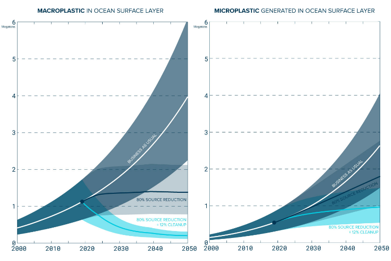

Ocean Cleanup
The Ocean Cleanup, una fundación sin fines de lucro fundada en 2013
por el ingeniero neerlandés Boyan Slat. Su objetivo principal es
desarrollar y aplicar tecnología avanzada para eliminar los plásticos
que ya contaminan los océanos y, al mismo tiempo, prevenir que nuevos
desechos lleguen a ellos. La contaminación por plásticos es uno de los
mayores desafíos medioambientales actuales: cada año, millones de
toneladas de residuos plásticos terminan en los océanos, afectando
gravemente la vida marina, los ecosistemas costeros y la cadena
alimentaria humana. The Ocean Cleanup aborda este problema desde un
enfoque tecnológico y sistemático.
Tecnología de limpieza marina
La organización ha diseñado un sistema que imita las técnicas
pesqueras tradicionales, pero adaptadas para la recolección de
plástico flotante. Su método consiste en una gran barrera flotante en
forma de "U", que se desplaza lentamente aprovechando las corrientes
oceánicas naturales. A medida que el sistema se mueve, atrapa los
residuos plásticos que se acumulan en su interior. Estos materiales
son luego recogidos por embarcaciones equipadas con rampas y cintas
transportadoras, que depositan los residuos en las bodegas para su
posterior reciclaje y clasificación. La operación se realiza a
profundidades de hasta 600 metros, donde se concentran grandes
cantidades de micro y macroplásticos.
Datos y cifras

El gráfico muestra cómo ha cambiado el tipo de plástico encontrado
en la Gran Mancha de Basura del Pacífico. Aunque se han retirado
grandes cantidades de residuos, los fragmentos pequeños han
aumentado mucho, lo que indica que los plásticos se están rompiendo
en pedazos más pequeños, pero todavía no han desaparecido del todo
🔹 Eje horizontal (X): el año o el tipo/tamaño de plástico.
🔹
Eje vertical (Y): cantidad o densidad de fragmentos plásticos
encontrados.
🔹 Colores o áreas: cada color representa una categoría de tamaño
(macro, meso, micro).
Proyectos actuales
Uno de los principales campos de acción de The Ocean Cleanup es la
Gran Mancha de Basura del Pacífico (Great Pacific Garbage Patch), una
vasta acumulación de residuos plásticos situada entre Hawái y
California. Allí, la organización ha logrado extraer cientos de
toneladas de plástico, demostrando la viabilidad técnica y ambiental
de sus sistemas. Además, The Ocean Cleanup desarrolla proyectos en
ríos —como el sistema "Interceptor"— para detener los plásticos antes
de que lleguen al mar, atacando así el problema desde su origen.